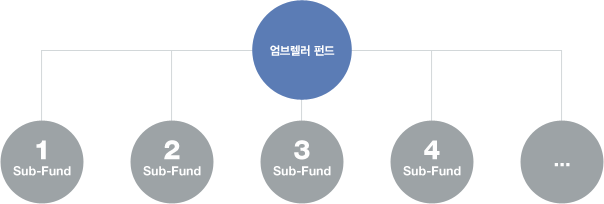

수익증권
엄브렐러 펀드는 성격이 서로 다른 여러개의 하위펀드(Sub-Fund)로 구성되어 있으며 하위펀드(Sub-Fund)간 전환이 자유로운 펀드입니다. 엄브렐러펀드의 하위펀드(Sub-Fund)는 MMF, 성장주식형, 인덱스주식형, 코스닥주식형, 배당주식형, 채권형 등으로 다양하게 구성되어 있어 시장상황에 따라 탄력적인 대응이 가능한 펀드입니다.
- 엄브렐러펀드는 투자자가 펀드를 지정해 가입하고 이후 다른 펀드로의 전환을 자유롭게 할 수 있는 펀드
- 엄브렐러펀드는 여러 개의 하위펀드(Sub-Fund)로 구성
- 하위펀드(Sub-Fund)별로 별도의 투자목적, 순자산가치가 산출되고 수수료 및 보수체계도 별도로 존재
- 하위펀드(Sub-Fund)간에 전환시 저렴한 비용 혹은 추가비용없이 가능

- 선취판매수수료: 펀드가입시 판매회사가 받는 수수료로 수익증권매입금액(가입금액)에서 공제한다.
- 전환수수료 : 엄브렐러 펀드에 있는 하위펀드(Sub-Fund)간의 전환청구시 징구하는 수수료로 해당 수수료 전액은
다시 펀드 (신탁재산)에 편입됨
- 환매수수료 : 없음